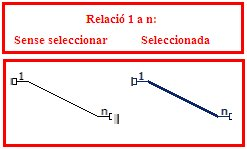

En la pràctica anterior s'ha anat fent l'explicació teòrica. Ara passem a l'acció: farem les relacions.
Respecte al mòdul 1, tal com s'ha anunciat en la pràctica anterior, s'ha preparat un fitxer de base de dades sobre el qual es treballarà en aquest segon mòdul.
Si no l'heu descarregat a la pràctica anterior, cal fer-ho ara mateix per poder iniciar la feina, doncs estudiarem la base de dades a partir del procés de completar aquest fitxer “a mig fer”. Per obrir la Base de Dades Biblioteca, feu clic aquí i comencem a fer la primera de les relacions: la de les taules Llibres i Llengua.
Bé, ara que ja ho sabem tot sobre el tema, anem a fer-ho.
Des de la finestra general de la Base de Dades, accedim a l'opció del menú: Eines | Relacions tal com es veu en la imatge següent:
Automàticament ens apareixerà la finestra següent:
En ella haurem de triar les dues taules amb les quals volem treballar, i que són Llibres i Llengua.
Seleccionant cadascuna d'elles i fent clic al botó Afegir, les tindrem
totes dues a la part central de la finestra, tal com mostra la següent
imatge que s'amplia en l'altra:
Arrosseguem les vores de la taula Llibres perquè mostri tots els
seus camps continguts. És una forma de tenir tota la informació a la
vista d'un sol cop.
Ara només ens queda arrossegar el camp codi llengua de la taula
Llengua (costat 1 de la relació) i deixar-lo anar just a sobre del camp
codi llengua de la taula Llibres (Costat n de la relació, tal com
mostra la imatge:
Observem que ens apareix una línia entre les dues taules que té aquest aspecte:

Com es pot apreciar, és una línia fina que uneix els dos camps, i
que a un dels seus extrems té un 1 petit, i a l'altre extrem té una n.
Ens indica quin tipus de relació és i el punt inicial o costat 1 de la
mateixa i el final o n de la mateixa, el 1 i el varios.
Aquesta finestra mostra l'aspecte esmentat de la primera relació feta
entre les dues taules:
Si fem clic sobre la línia, aquesta quedarà seleccionada (es mostra amb un gruix superior) i, si la volem esborrar, només hem de polsar el botó suprimir del teclat. La relació deixarà d'existir.
Una altra acció que podem fer, es fer clic sobre la línia, però amb
el botó secundari del ratolí, i ens apareixerà aquest petit submenú amb
dues opcions:
Efectivament, la primera opció Eliminar és per esborrar la relació recent feta.
Quant a la segona Editar,
permet modificar una sèrie de característiques importants de la
relació, i que podem fer mitjançant aquesta finestra que apareix al
donar sobre Edita:
Com podeu veure hi ha dues parts a la pantalla, les opcions d'Actualització i les d'Eliminació. Això vol dir que si esborrem un camp que té relació amb l'altra taula, el programa Open Data.org s'ha de comportar d'una forma determinada.
En cas de tenir activada l'opció: , si esborro un autor de la taula Llengua, què farà el programa amb el llibre d'aquesta llengua concreta? Doncs si esborro la llengua fr de la taula Llengua, s'eliminaran els llibres d'aquesta llengua de la taula Llibres.
Per tant, és important controlar aquests tipus d'accions de cara a un correcte funcionament del programa. Les altres opcions, són lògiques, oi?
A continuació se us demana que intenteu fer-ne algunes més vosaltres sols. En el proper mòdul, es completaran totes, però de moment, interessa que aneu practicant en la seva creació.
Es proposa que feu vosaltres les relacions que es mostren en la imatge inferior d'aquesta pàgina. Gairebé la feina estarà acabada, però com que hi ha algunes de les taules que donen petits problemes, es completarà tot més endavant.
El resultat momentani haurà de ser tal com la imatge que podem veure a continuació:

En aquest punt s'ha proposat fer unes quantes relacions i
deixar-ne tres per completar en el mòdul següent, doncs donen una sèrie
de problemes que s'explicaran en el seu moment. Les altres que es
proposen no haurien de suposar gaires dificultats.
A l'apartat d'exercicis d'aquest mòdul es proposa un altre exemple per aplicar i consolidar el tema de les relacions, i fer un petit escrit confirmant que les relacions fetes aquí s'han completat amb èxit.

|
|

|
|